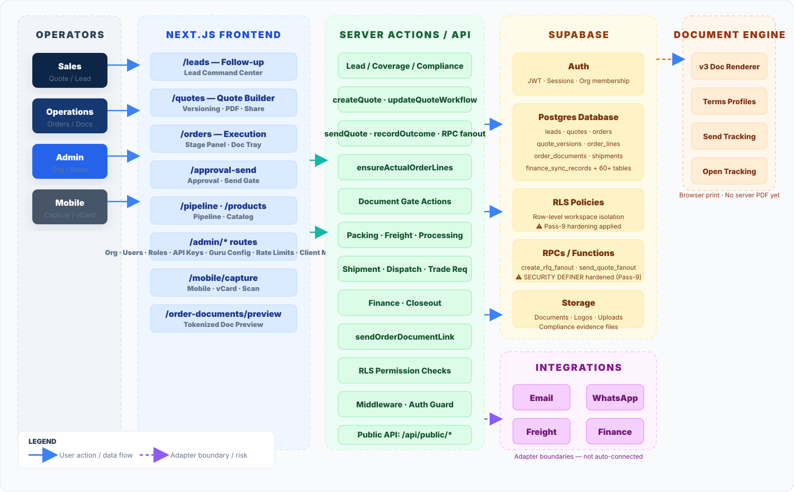
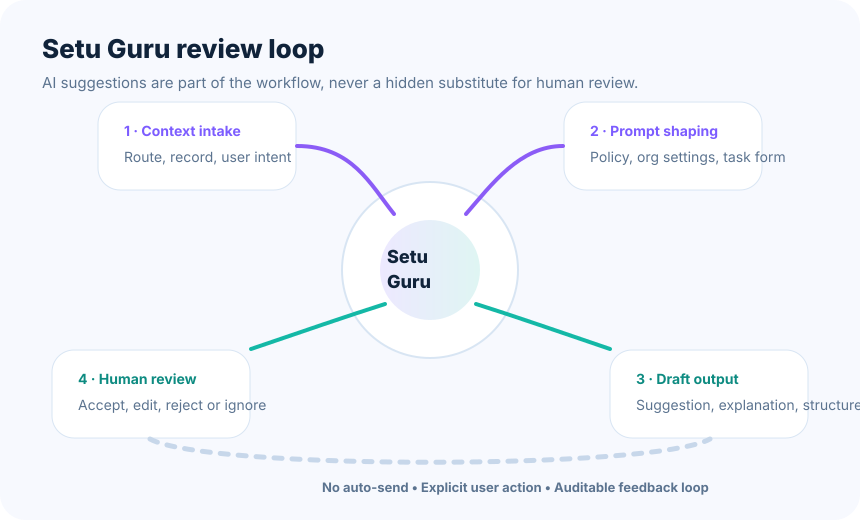

Platform
SaaS with organisation isolation
Each organisation has its own users, roles, routes, records, pipeline settings, quotes, orders, document profiles and workspace controls.
This documentation contains internal product, workflow, architecture and operations information. Internal members can view it after authentication. External users can only access approved shared links with sensitive controls hidden.
This documentation rebuild keeps the new workspace layout, upgrades the visual system, restores stronger substance from the older documentation, and documents the product as a full commercial engine: lead capture, qualification, quoting, approval gates, order execution, compliance and closeout — with Setu Guru, smart business-card capture and mobile collaboration built in.
SETU Flow CRM is a multi-tenant commercial operating platform for businesses that sell, quote, negotiate, execute and close complex trade opportunities. The product is built to remove commercial ambiguity, enforce operating discipline and keep every participant aligned from capture to cash.
Each organisation has its own users, roles, routes, records, pipeline settings, quotes, orders, document profiles and workspace controls.
Sales converts demand, operations executes commitments, leadership monitors performance, and admins govern settings, data quality and policy boundaries.
Quote sending, acceptance, order activation, dispatch and closeout are all bound by checks, approvals, status transitions and audit events.
Setu Guru drafts, explains and suggests. It does not silently act, auto-send or bypass human review.
We are building a premium commercial system that feels as intentional as a modern B2B product, but is operationally deep enough for real export and trade workflows. Documentation should communicate both the product vision and the working mechanics.
Sent quote versions are locked. Orders trace back to accepted commercial intent. Every meaningful transition is recorded. Mobile helps field users capture and connect — it does not dilute the desktop workflow.
Leads become structured commercial objects. Quotes become governed versions rather than loose files. Order execution becomes stage-based. Leadership gets real pipeline and execution visibility. Teams stop guessing what happened and instead operate from shared evidence.
| Principle | Operational meaning | How it appears in the product |
|---|---|---|
| Single source of truth | Commercial context should not be fragmented across email threads, spreadsheets and chat. | Leads, quotes, accepted versions, order stages and sends all live inside the platform. |
| Approval before action | High-impact commercial events should be gated. | Quotes, actual lines, documents and stage transitions use approval gates and status checks. |
| Human-review AI | AI helps the operator but does not replace responsibility. | Setu Guru suggestions are explicit, route-aware and reviewable. |
| Field-to-core continuity | Trade-show and mobile interactions must flow directly into the core CRM. | Business card scan, smart vCard and mobile lead capture create or enrich structured CRM records. |
The platform combines a Next.js application shell, server-side APIs, Supabase-backed persistence, role-aware workspace logic and public/share surfaces. The system is designed to keep business workflows coherent while preserving clean boundaries between UI, server actions, security and integrations.

Primary authenticated workspaces include dashboard, follow-up, pipeline, quotes, orders, admin, products, reports and mobile-specific capture surfaces.
Domain-specific APIs cover public lead capture, mobile card scan, compliance gates, quote PDFs, order documents, Setu Guru utilities and internal documentation helpers.
Authentication, organisation membership, profiles, CRM records and audit artifacts live in Supabase, with row-level isolation enforcing organisation boundaries.
| Layer | Role | Notes |
|---|---|---|
| Next.js App Router | Application shell, route grouping and server route hosting. | Supports internal workspaces, public endpoints and documentation pages. |
| Supabase Auth | Session management and user identification. | Internal static docs use a server auth-check bridge so they can remain secure. |
| Workspace permission layer | Normalises roles and organisation membership. | Determines who can access admin surfaces and internal operational features. |
| Public/share surfaces | Externally consumable routes and time-bound shared docs views. | External shared mode hides internal-only information and controls. |
The CRM is not one screen — it is a coordinated system of workspaces. Documentation should explain each workspace in business language and technical scope, without repeating navigation clutter.
Leadership and operator snapshot of leads, due follow-ups, pipeline value, quote activity and execution load.
Lead queue, command center, qualification, next-action planning, coverage and communication context.
Stage-based board for current demand motion and commercial progression.
Versioned pricing workspace with gate-aware send logic, accepted version control and PDF output.
Execution command center from accepted commercial intent through dispatch, finance and closeout.
Catalog, variants, readiness, pricing basis and quote readiness management.
Organisation settings, team, document profiles, governance, config and platform controls.
Field capture, business card scan, lead intake and smart vCard distribution surfaces.
Documentation, roadmap and issue tracker surfaces for product communication and project governance.
This workspace currently reflects a single active contributor context. The contributor panel and metric cards are prepared to scale when more teammates are added later.
Current primary contributor / owner for the internal docs narrative, product updates and premium workspace rebuild.
The commercial workflow is the heart of the product. It must be explained as a disciplined lifecycle, not just a list of screens. Each stage changes both what the operator sees and what the system will allow next.

Leads enter from manual entry, public intake, business card scan, smart vCard or trade-show activity.
Sales validates who the lead is, what they want, whether coverage exists and what the next move should be.
Commercial intent becomes a versioned quote with pricing basis, line items, approvals and send readiness.
Only accepted commercial terms can activate execution. Acceptance anchors the traceable order handoff.
Orders move through actual lines, document approvals, processing, delivery and finance handoff.
Final invoice, payment and reconciliation confirm that the transaction is complete.
No quote send without clearance. No order execution without accepted commercial intent. No hidden AI action. No stage-skipping around approvals or document readiness.
The older documentation carried stronger structural information but less polished presentation. This rebuild keeps the depth and upgrades the visuals with cleaner premium diagrams and more readable swimlanes.


Instead of developer-heavy descriptions, these guides focus on how real operators work in the product. Each guide highlights what the user should do, what the system should show, and what must not be bypassed.
Move from captured lead to a quote-ready opportunity without losing quality or traceability.
Create a trustworthy commercial proposal with correct terms, version control and send discipline.
Execution begins with accepted commercial intent and ends only after documentary and financial closure.
This area was underrepresented in the old docs and is now elevated as a first-class product capability. Setu Guru and the field-capture features are important differentiators and deserve clearer presentation.
It understands the route or work context, prepares suggestions, explains logic, helps with structured data tasks and supports users without bypassing the system's approval or communication controls.
Route-aware help, draft suggestions, structured enrichment and explainability for CRM workspaces.
Point-of-capture extraction for trade shows and meetings, reducing manual entry and increasing follow-up speed.
Digital contact sharing that connects recipients back into the CRM ecosystem and can prefill structured intake surfaces.
All outputs are suggestions. Operators decide whether to use them. The system preserves approval gates and business rules regardless of AI assistance.
Card scan and vCard capabilities are especially important for fast field capture. They shorten time-to-follow-up and pull external contact moments straight into the CRM workflow.
The security model is based on organisation scope, authenticated membership and role-based permissions. The data model tracks the commercial lifecycle while keeping auditability and lineage intact.
Users operate within an active organisation. Internal docs also verify organisation membership before showing sensitive information.
Admin-only surfaces, reviewer actions and internal tooling depend on workspace roles and canonical permission checks.
Quotes, versions, documents, sends, order stage events and AI feedback establish traceability.
| Domain | Representative tables / records | Purpose |
|---|---|---|
| Identity & org | profiles, organizations, organization_members, user_roles | User identity, active org membership and permission scope. |
| Lead management | leads, lead_follow_ups, lead_product_interests | Structured lead capture, qualification and next actions. |
| Commercial quoting | quotes, quote_versions, quote_version_line_items, pricing snapshots | Versioned commercial records and send-ready pricing context. |
| Order execution | orders, order_lines, order_documents, order_stage_events, order_document_sends | Execution state, documentary lifecycle and operational evidence. |
| Internal governance | roadmap_items, sprint_issues, docs workspace screenshots | Product planning, issue management and documentation support artifacts. |
When a documentation page is opened with a shared token, internal controls, live issue counts, share management and internal-only calls-to-action are hidden. External viewers only see the approved narrative and approved screenshots.
API routes support public intake, mobile capture, quote PDFs, order documents, compliance helpers, Setu Guru services and internal workspace utilities. Integration boundaries should remain explicit and queue-friendly wherever possible.
Client onboarding, card intake, wallet passes and card analytics expose externally consumable entry points.
Quotes, orders, product catalog and compliance endpoints support governed internal workflows.
Setu Guru endpoints, business-card scan and vCard generation power the smart assistance and mobile experiences.
| Endpoint family | Examples | Role |
|---|---|---|
| Internal auth bridge | /api/internal/auth-check, /api/internal/docs-metrics, /api/internal/docs-screenshots | Secure static internal documentation and auxiliary workspace data. |
| Commercial domain | /api/quotes/*, /api/orders/*, /api/products/* | Govern quote, order and product workflows. |
| Compliance & PDFs | /api/compliance/*, /api/order-documents/pdf, /api/quotes/[quoteId]/pdf | Support gated business documents and compliance verification. |
| AI / smart capture | /api/setu-guru/*, /api/mobile/contact-scan, /api/contact-exchange/* | Assistive intelligence, OCR/vision capture and contact-sharing flows. |
| Webhooks & integrations | /api/integrations/webhooks/[provider], /api/webhooks/mailtrap | Inbound platform events and external service coordination. |
Mobile is additive, not a shrunk desktop. It exists to support real field use cases: trade-show capture, quick lead intake, business-card scan and controlled contact exchange.
Fast structured intake with direct CRM continuity and quick next-step activation.
Image capture plus extraction to reduce friction between in-person interaction and CRM follow-up.
Branded contact distribution with CRM-aware destination flows and public route support.
This section condenses the system into operational reminders for quick reuse. It is not the full workflow explanation — it is the fast cheat sheet for internal operators and reviewers.
Reference screenshots can now be added directly from this documentation workspace instead of being committed into the repo one by one. Internal users can upload approved images; shared viewers only see the approved gallery.
Use this gallery to support documentation, training and reviews with current workspace visuals.